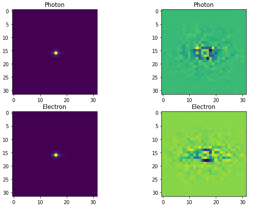
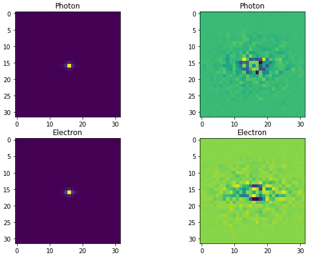
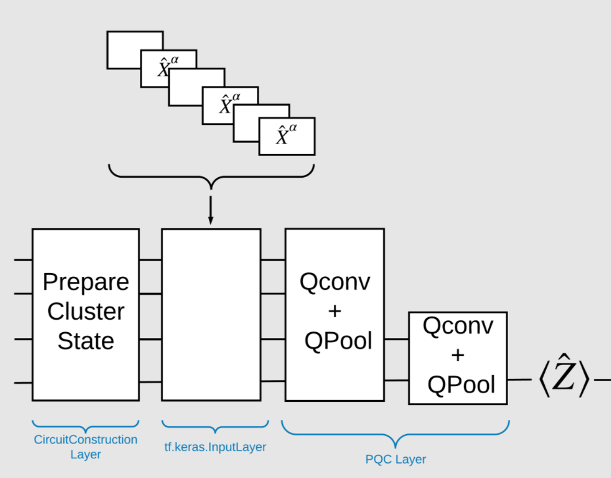
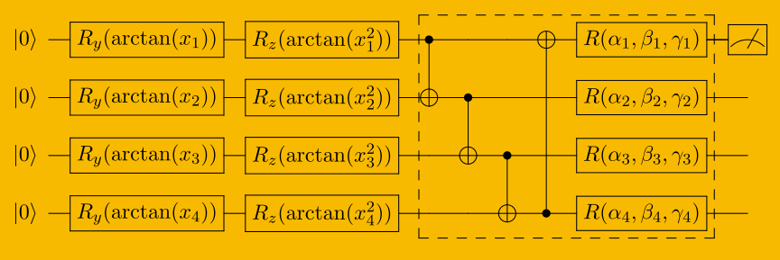
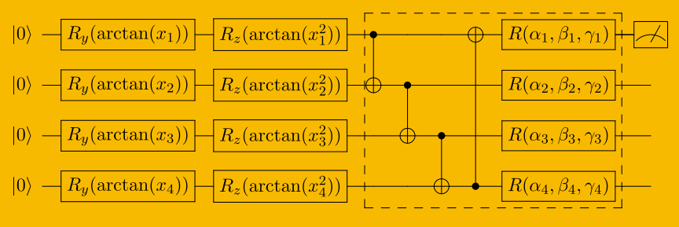
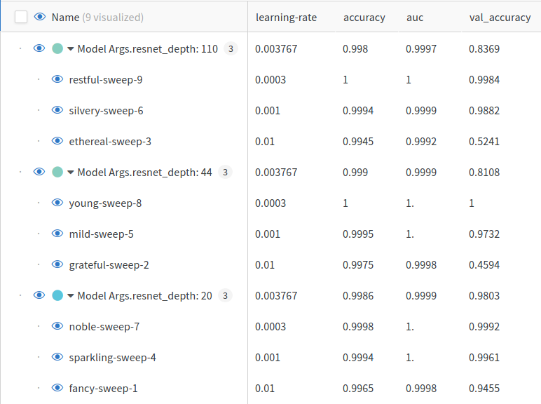
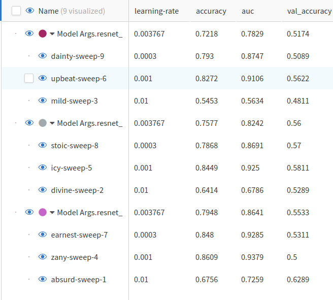

Fame of the Convolution
revealOptions: transition: ‘fade’ transitionSpeed: ‘fast’ width: 1400 —
Classical Models

- Resnet v1* and v2+ (both have slightly different architecture)
- Classical CNN (variable Conv and FC layers)
- FFNN (variable FC layers)
Last two will be used to for comparing results with Quantum models
Quantum outline

Dataset sizes
| Dataset | Train | Test |
|---|---|---|
| MNIST | 12665 | 2115 |
| ElectronPhoton* | 9000 | 1000 |
| QuarkGluon* | 9000 | 1000 |
*Randomly sampled.
Data preperation
 


- PCA
- Standardize
- Center Crop
- Graph Convolution
- Min max scaling (-pi, pi)
Encoding Circuits
Angle Map
(0, 0): ───Rx(pi*x0)───
(0, 1): ───Rx(pi*x1)───
(0, 2): ───Rx(pi*x2)───
(0, 3): ───Rx(pi*x3)───
(0, 0): ───Rx(pi*x0)───
(0, 1): ───Rx(pi*x1)───
(0, 2): ───Rx(pi*x2)───
(0, 3): ───Rx(pi*x3)───
Double Angle Map
───Ry(pi*atan(x0))───Rz(pi*atan(x1**2))───
───Ry(pi*atan(x2))───Rz(pi*atan(x3**2))───
───Ry(pi*atan(x4))───Rz(pi*atan(x5**2))───
───Ry(pi*atan(x6))───Rz(pi*atan(x7**2))───
Encoding Circuits Contd.
Amplitude Map*


*Supervised Learning with Quantum Computers
Quantum model

Figure from Quantum convolutional neural networks for high energy physics data analysis
Ansatzes

 

- Observable: $-0.5Z + 0.5 I$
- Loss Function: Binary cross entropy
- Implementation: tfq.layers.ControlledPQC
- Data ReUploading or not? Pass an argument.
- More ansatzes comming soon.
- Single qubit classifier?
Evaluation
Classical Models
- Performed Multi-GPU Hyperparameter Sweeps on Resnet v1 and v2 with MNIST, ElectronPhoton and QuarkGluon
- learning rates $\in$ 0.01, 0.001, 0.0003
- Resnet v1 depths $\in$ 20, 40, 110
- Resnet v1 depths $\in$ 20, 56, 110
- (3 $\times$ 3 ) $\implies$ 9 runs per model per dataset
Results
MNIST Resnet V1

Results Contd.
Electron Photon Resnet V1

Results Contd.
Electron Photon Resnet V2
Results Contd.
More visualizations on here
Quantum Status
- Created ansatzes for Chen et al. and Cong at el.
- Trained those for sampled dataset
- Facing some issues while training model on big dataset (posted on slack)
- Seeking a workaround for it.
Status
Done:
- Data preprocessing
- Classical models training
- Encoding circuits
- Ansatzes (Chen et al. and Cong at el)
- Trained locally on small samples
Goals for next week:
- Fixing training bug
- Sandwich circuits between classical layers.
- Train ansatzes on larger dataset
- Try DRC
- Try single qubit classifier
Questions:
- Shall we try multi class classification? Do we need it in particle physics?
- Any help with the bug?
- Any suggestion for papers?
- Any other feedback?
References
- Cong, I., Choi, S. & Lukin, M.D. Quantum convolutional neural networks. Nat. Phys. 15, 1273–1278 (2019). https://doi.org/10.1038/s41567-019-0648-8
- S.~Y.~C.~Chen, T.~C.~Wei, C.~Zhang, H.~Yu and S.~Yoo, ``Quantum convolutional neural networks for high energy physics data analysis,’’ Phys. Rev. Res. \textbf{4} (2022) no.1, 013231 doi:10.1103/PhysRevResearch.4.013231
- Liu, J., Lim, K.H., Wood, K.L. et al. Hybrid quantum-classical convolutional neural networks. Sci. China Phys. Mech. Astron. 64, 290311 (2021). https://doi.org/10.1007/s11433-021-1734-3
- Tüysüz, C., Rieger, C., Novotny, K. et al. Hybrid quantum classical graph neural networks for particle track reconstruction. Quantum Mach. Intell. 3, 29 (2021). https://doi.org/10.1007/s42484-021-00055-9
- Pérez-Salinas, A., Cervera-Lierta, A., Gil-Fuster, E., & Latorre, J. (2020). Data re-uploading for a universal quantum classifier. Quantum, 4, 226.
- Chen, Yusui & Hu, Wenhao & Li, Xiang. (2021). Feasible Architecture for Quantum Fully Convolutional Networks.
- Chen, Yixiong. (2021). QDCNN: Quantum Dilated Convolutional Neural Network.